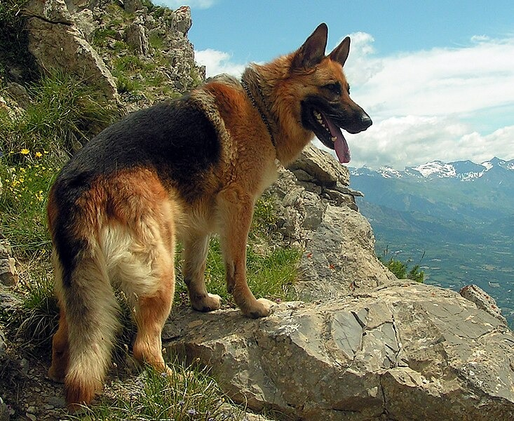

Home
Dog Picture
Dog Video
The German Shepherd Dog (GSD)—or simply ‘Shepherd’—consistently ranks among the top ten most popular breeds in America,
second only to the number one Labrador Retriever since 2010.

Home